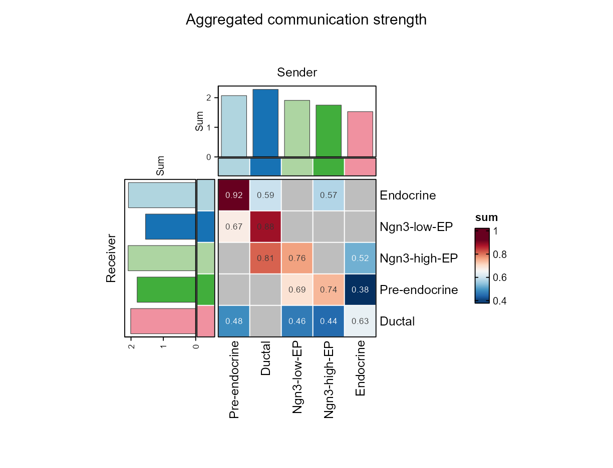
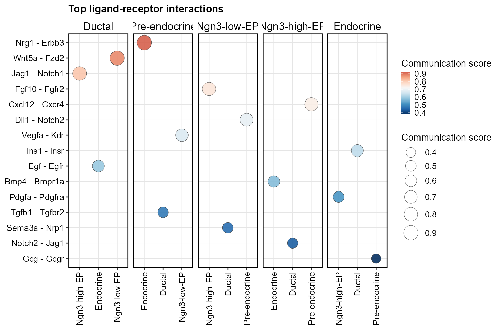
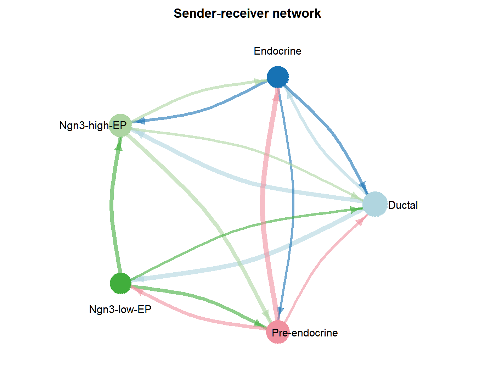
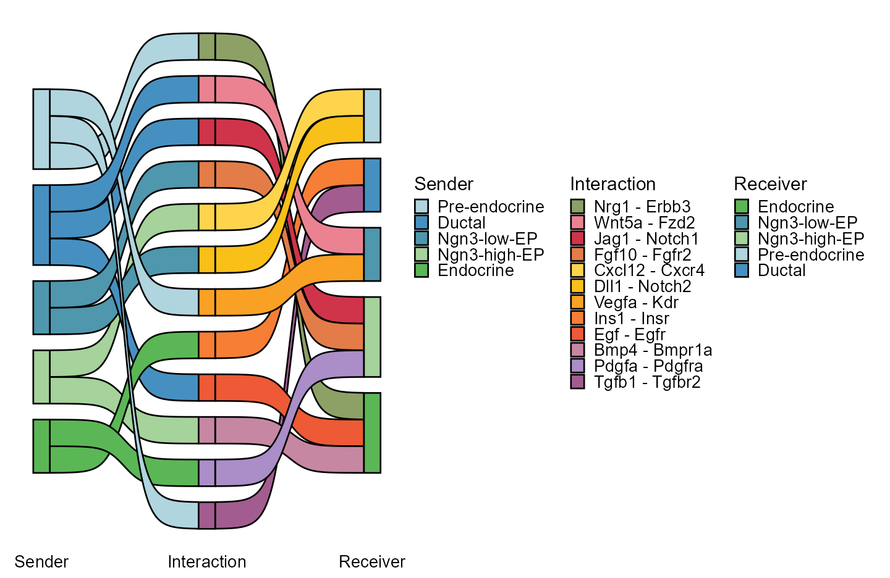
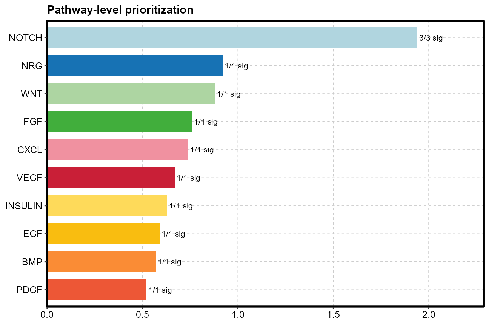
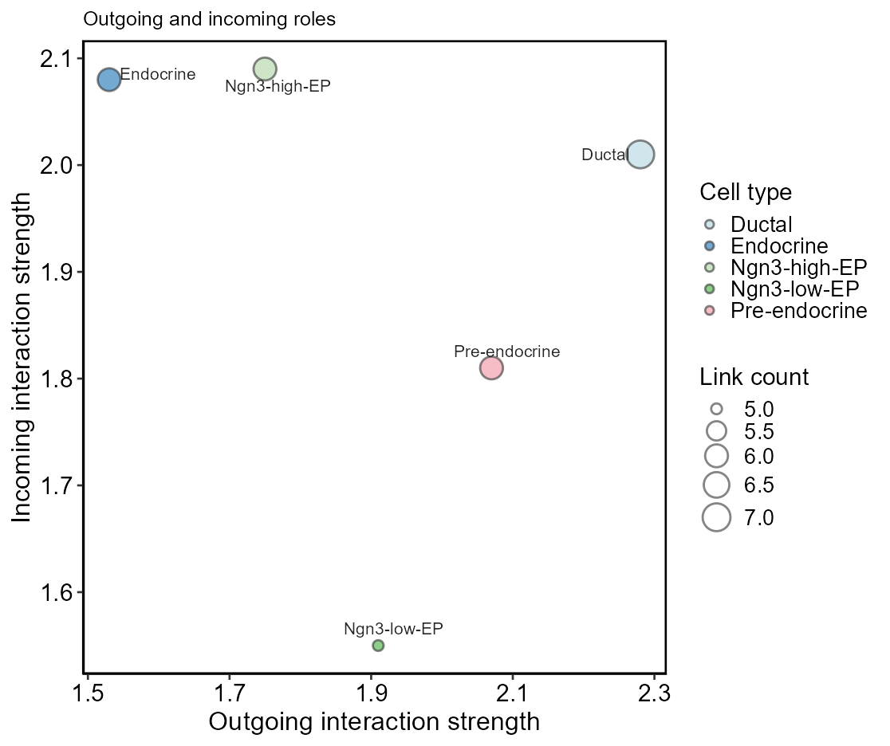

Cell-Cell Communication Analysis
这份教程把 scop 里和细胞通讯相关的功能全部串成一个可上手的分析路径：
先解释为什么要做通讯分析，再讲每个推断函数做什么、结果存在哪里、怎么转换，最后用
CCCHeatmap()、CCCNetworkPlot()、CCCStatPlot()
把结果读成生物学假设。
生物学意义
在组织、肿瘤微环境、发育过程和免疫反应中，单个细胞很少孤立工作。上皮细胞可以分泌 WNT、FGF 或 EGF 影响邻近祖细胞；免疫细胞可以通过 CXCL/CCL 趋化轴招募其他细胞；成纤维细胞可以通过 TGFβ 或 ECM 相关信号 改变肿瘤细胞状态。单细胞 RNA-seq 和空间转录组不能直接测到蛋白结合事件，但能提供配体和受体的细胞群特异表达证据。
一个标准的通讯事件可以拆成六个问题：
| 概念 | 含义 | 解释时要问的问题 |
|---|---|---|
sender | 发送信号的细胞群 | 这个细胞群是否真的表达配体？细胞数是否足够？ |
receiver | 接收信号的细胞群 | 这个细胞群是否表达受体？是否处在可响应状态？ |
ligand | 发送端配体 | 是否是分泌蛋白、膜蛋白或已知信号分子？ |
receptor | 接收端受体 | 是否是对应通路的受体或受体复合体成员？ |
pathway | 通路分类 | 通路是否符合组织背景、发育阶段、疾病状态？ |
score / pvalue | 方法给出的强度和统计支持 | 是表达强度、置换检验、rank，还是 ligand-target 活性？ |
输入与质控
scop 的通讯函数主要接受 Seurat 对象。最重要的输入不是降维图，而是可靠的细胞身份列。
library(scop)
library(Seurat)
data("pancreas_sub", package = "scop")
srt <- pancreas_sub
# 如果只有 counts，先做标准表达预处理。
srt <- NormalizeData(srt)
srt <- FindVariableFeatures(srt)
srt <- ScaleData(srt)
srt <- RunPCA(srt)
srt <- RunUMAP(srt, dims = 1:30)
# 细胞通讯分组列，后续作为 sender / receiver。
table(srt$CellType)分析前检查
| 检查项 | 为什么重要 | 建议 |
|---|---|---|
group.by 是否存在 | 所有 sender/receiver 都来自这个 metadata 列 | stopifnot("CellType" %in% colnames(srt@meta.data)) |
| 每组细胞数 | 小群体会导致不稳定置换或假阴性 | 每组尽量 ≥ 10；探索阶段可合并过细 cluster |
| 表达层 | 多数方法期待 normalized expression | 通常用 assay = "RNA"、layer = "data" |
| 物种 | 数据库覆盖和基因名映射依赖物种 | CellChat 指定物种；CellphoneDB 小鼠通常转 human ortholog |
| 实验设计 | NicheNet / MultiNicheNet 依赖条件和样本 | 确认 condition.by、sample.by 是真实实验信息 |
方法选择
这些函数不是互相替代关系。它们关注的生物学问题不同。
| 函数 | 最适合的问题 | 证据类型 | 新手建议 |
|---|---|---|---|
RunLIANA() | 快速得到多方法支持的 L-R 候选 | 多资源、多方法 rank/score | 探索分析优先从它开始 |
RunCellChat() | 通路级网络、细胞角色、条件差异 | L-R + pathway 聚合 + network centrality | 适合写图和解释通路结构 |
RunCellphoneDB() | CellPhoneDB 标准置换检验 | 表达阈值 + permutation p-value | 适合和 CellPhoneDB 文献/流程对齐 |
RunNichenetr() | sender ligand 是否解释 receiver 的目标基因变化 | ligand-receptor + ligand-target prior | 适合有明确 receiver 和条件差异时使用 |
RunMultiNichenetr() | 多样本多条件下优先改变的通讯轴 | 跨样本统计 + ligand-target prioritization | 适合病人/样本重复充分的研究 |
RunscOMM() | 把参考标签预测到 query | 监督式标签预测 | 它不是 CCC 推断，但能提高 group.by 注释质量 |
结果结构
scop 会把后端结果保存在 srt@tools 中，并尽量同步到统一的
srt@tools[["CCC"]] 结构。理解这个结构，后面画图和导出都会更清楚。
| 位置 | 内容 | 用途 |
|---|---|---|
srt@tools[["CellChat"]] | CellChat 原始和标准化结果 | CellChat 专属通路图、差异网络、ranknet |
srt@tools[["CellphoneDB"]] | CellphoneDB 输出表和标准长表 | 置换显著 L-R 对、CellphoneDB 结果复查 |
srt@tools[["LIANA"]] | LIANA 原始结果、long_table、liana_table | 多方法 L-R 结果和导出 |
srt@tools[["Nichenetr"]] | ligand activities、ligand-target、ligand-receptor 标准结果 | 解释 receiver 基因程序 |
srt@tools[["MultiNichenetr"]] | 多样本优先级通讯结果 | 条件比较下的 sender-receiver-ligand-target 轴 |
srt@tools[["CCC"]] | 统一长表、聚合表、LIANA-like 表 | CCCHeatmap()、CCCNetworkPlot()、CCCStatPlot() 通用入口 |
统一长表核心列
| 列 | 含义 | 典型来源 |
|---|---|---|
sender, receiver | 细胞群方向 | group.by |
ligand, receptor | L-R 对 | 数据库或后端标准化 |
interaction_name, pair_lr | 交互名称 | 配体和受体拼接或后端 ID |
pathway_name, classification | 通路/分类 | CellChat pathway、CellphoneDB classification、LIANA resource annotation |
score | 通讯强度或优先级 | prob、means、LRscore、prioritization score 等标准化 |
pvalue | 显著性或 rank-like 支持 | 置换 p-value、aggregate rank、specificity rank |
method | 结果来源 | CellChat、CellphoneDB、LIANA、Nichenetr、MultiNichenetr |
推断函数
下面是每个运行函数的完整使用逻辑。每一节都按“解决什么问题、怎么跑、参数怎么选、结果怎么看、容易错在哪里”组织。
RunCellChat()
Pathway network
RunCellChat() 适合分析通路级通讯、细胞群发送/接收角色以及不同条件之间的通讯差异。
它比单纯的 L-R 列表更强调网络结构和 signaling pathway。
基础用法
srt <- RunCellChat(
srt,
group.by = "CellType",
species = "Mus_musculus",
min.cells = 10,
thresh = 0.05,
assay = "RNA",
layer = "data"
)条件比较
srt <- RunCellChat(
srt,
group.by = "CellType",
species = "Mus_musculus",
group_column = "condition",
group_cmp = list(c("treated", "control")),
min.cells = 10
)关键参数
| 参数 | 含义 | 建议 |
|---|---|---|
group.by | 细胞群身份列 | 优先使用人工校正或高置信度标签 |
species | 数据库物种 | Homo_sapiens、Mus_musculus、zebrafish |
annotation_selected | 只分析指定细胞群 | 当细胞类型太多时先聚焦生态位 |
group_column | 条件/组别列 | 做差异通讯时必需 |
group_cmp | 两两比较 | list(c("treated", "control")) |
thresh | 显著性阈值 | 默认 0.05；探索阶段可放宽但要说明 |
min.cells | 每群最少细胞数 | 小群体先合并或过滤 |
推荐后续图
CCCNetworkPlot(srt, method = "CellChat", plot_type = "circle", measure = "weight")
CCCHeatmap(srt, method = "CellChat", plot_type = "role_heatmap", pattern = "outgoing")
CCCStatPlot(srt, method = "CellChat", plot_type = "ranknet")
CCCNetworkPlot(srt, method = "CellChat", condition = "treated_vs_control", plot_type = "diff_network")RunCellphoneDB()
Permutation test
RunCellphoneDB() 调用 CellPhoneDB v5。它适合产出经典 CellPhoneDB 形式的显著 L-R 对，尤其适合和已有文献、CellPhoneDB 官方流程对齐。
srt <- RunCellphoneDB(
srt,
group.by = "CellType",
species = "Mus_musculus",
method = "statistical_analysis",
convert_to_human = TRUE,
counts_data = "hgnc_symbol",
threshold = 0.1,
pvalue = 0.05,
iterations = 1000,
cores = 4
)三种 method 怎么选
method | 含义 | 适用场景 |
|---|---|---|
statistical_analysis | 置换检验，给出 p-value | 默认推荐，正式结果优先 |
analysis | 不做置换，速度更快 | 快速探索或大数据预筛 |
degs_analysis | 结合 DEG 表 | 已有差异基因结果，希望聚焦差异通讯 |
关键参数
| 参数 | 含义 | 注意点 |
|---|---|---|
cpdb_file_path | CellPhoneDB 数据库 zip | 为空时 wrapper 会尝试查找/下载；生产环境建议固定版本 |
convert_to_human | 非人类数据转 human ortholog | CellPhoneDB 人类中心，小鼠通常设 TRUE |
microenvs | 限制可通讯细胞群 | 空间/组织区域分析很有价值，可减少不合理远距离边 |
active_tfs | 活跃转录因子表 | 可增强下游解释，但要求额外输入可靠 |
subsampling | 大数据抽样 | 节省时间，但会引入抽样不确定性 |
output_path, keep_output | 保留 CellPhoneDB 原始文件 | 写文章或复查时建议保留 |
推荐后续图
CCCHeatmap(srt, method = "CellphoneDB", plot_type = "dot", display_by = "interaction", top_n = 40)
CCCNetworkPlot(srt, method = "CellphoneDB", plot_type = "circle", display_by = "aggregation")
CCCStatPlot(srt, method = "CellphoneDB", plot_type = "bar", display_by = "interaction")RunLIANA()
Consensus LR
RunLIANA() 是最适合作为入门默认路线的函数。它把多种 L-R scoring 策略和资源整合起来，输出统一的候选通讯表。
srt <- RunLIANA(
srt,
group.by = "CellType",
method = c("natmi", "connectome", "logfc", "sca", "cellphonedb"),
resource = "Consensus",
min_cells = 5,
return_all = FALSE
)方法含义
| LIANA method | 直观理解 | 结果解释 |
|---|---|---|
natmi | 表达支持的 L-R 连接 | 适合探索细胞群之间可能的边 |
connectome | 结合表达比例和表达强度 | 适合排序高表达支持的交互 |
logfc | 细胞群特异表达变化 | 强调 sender/receiver 的特异性 |
sca | SingleCellSignalR-like scoring | 适合补充 L-R scoring 证据 |
cellphonedb | CellPhoneDB-like summary | 适合和 CellPhoneDB 风格比较 |
推荐解释路径
- 先用
CCCHeatmap(..., display_by = "aggregation")看哪些 sender-receiver 方向最强。 - 再用
CCCHeatmap(..., display_by = "interaction")看具体 L-R 对。 - 用
CCCStatPlot(..., plot_type = "pathway_summary")看通路层级。 - 最终回到 marker/feature plot 验证 ligand 和 receptor 的细胞群表达。
RunNichenetr()
Ligand-target
RunNichenetr() 关注的是“哪些 sender ligand 可以解释 receiver 细胞中的目标基因程序”。它比普通 L-R 共表达更接近调控假设。
条件差异模式
srt <- RunNichenetr(
srt,
group.by = "CellType",
receiver = "Endocrine",
sender = c("Ductal", "Pre-endocrine"),
condition.by = "condition",
condition_oi = "treated",
condition_reference = "control",
mode = "aggregate",
species = "Mus_musculus",
expression_pct = 0.1,
lfc_cutoff = 0.25,
top_n_ligands = 30,
top_n_targets = 200
)自定义基因集模式
geneset_oi <- c("Ins1", "Ins2", "Gcg", "Pdx1", "Mafa")
background <- rownames(srt)
srt <- RunNichenetr(
srt,
group.by = "CellType",
receiver = "Endocrine",
sender = "all",
mode = "custom",
geneset = geneset_oi,
background_expressed_genes = background,
species = "Mus_musculus"
)关键参数
| 参数 | 含义 | 建议 |
|---|---|---|
receiver | 要解释的接收细胞 | 必须是明确生物学问题的中心 |
sender | 候选发送细胞 | "all" 会用所有非 receiver 细胞；机制研究建议指定候选 |
mode | 运行模式 | aggregate 用条件差异；custom 用自定义目标基因集 |
geneset | receiver 中希望解释的基因集合 | 只在 custom 模式必需 |
lr_network, ligand_target_matrix | 先验模型 | 默认模型够用；特殊物种或自建网络时传入 rds |
推荐后续图
CCCHeatmap(srt, method = "Nichenetr", plot_type = "ligand_target", top_n = 30)
CCCStatPlot(srt, method = "Nichenetr", plot_type = "bar", display_by = "interaction", top_n = 20)RunMultiNichenetr()
Multi-sample design
RunMultiNichenetr() 用于多样本、多条件实验。它不只是把所有细胞混在一起比较，而是利用样本层级信息评估条件相关通讯轴。
srt <- RunMultiNichenetr(
srt,
group.by = "CellType",
sample.by = "sample_id",
condition.by = "condition",
condition_oi = "treated",
condition_reference = "control",
receiver_celltypes = "Endocrine",
sender_celltypes = c("Ductal", "Pre-endocrine", "Ngn3-high-EP"),
species = "Mus_musculus",
fraction_cutoff = 0.05,
min_cells = 10,
empirical_pval = TRUE,
top_n_interactions = 250
)什么时候用它
- 你有多个 biological replicates，例如多个病人、多个样本、多个 organoids。
- 你有明确条件对比，例如 disease vs control、treated vs untreated。
- 你关心的是“条件改变后，哪个 sender ligand 更可能驱动 receiver 中的目标程序变化”。
最常见失败原因
| 错误来源 | 表现 | 处理 |
|---|---|---|
| 样本数不足 | 模型无法估计条件差异 | 增加样本或改用 sample-agnostic 模式 |
| 某细胞类型只在一个条件中出现 | celltype-condition 不平衡 | 合并相近细胞类型或过滤该 receiver/sender |
| 每个 sample-celltype 细胞太少 | 结果为空或报错 | 降低 min_cells 或合并小群 |
| batch 和 condition 混杂 | 结果难解释 | 谨慎加入 batches 或 covariates |
RunscOMM()
Label prediction
RunscOMM() 不是 L-R 通讯推断函数。它做 reference-to-query 标签预测，把参考对象中的细胞类型迁移到 query 对象上。
它之所以放在 CCC 教程里，是因为通讯分析的第一步就是可靠的细胞身份。
query <- RunscOMM(
srt = query,
reference = reference,
reference_assay = "RNA",
query_assay = "RNA",
reference_label = "CellType",
prediction_prefix = "predicted_",
scomm_epochs = 10,
evaluate = FALSE
)输出
query@meta.data中新增predicted_*标签和概率列。query@tools[["scOMM"]]保存预测列、概率列、特征和评估指标。- 如果 query 有真实标签，可设
evaluate = TRUE和truth_col计算预测质量。
RunscOMM() 或其他注释方法得到更可信的 CellType，再把该列作为所有通讯函数的 group.by。
转换函数
ccc_to_liana()
ccc_to_liana() 把任意 scop CCC 结果导出成 LIANA-like 表。它适合导出、复查、和 Python/OmicVerse 生态互通。
liana_like <- ccc_to_liana(
srt,
method = "CellChat",
signaling = "NOTCH",
sender.use = c("Ductal", "Ngn3-high-EP"),
receiver.use = "Endocrine",
thresh = 0.05,
aggregate = TRUE
)
head(liana_like)ccc_to_adata()
ccc_to_adata() 把 CCC 结果转换成 OmicVerse communication AnnData。只在需要和 Python OmicVerse ov.pl.ccc_* 图系统对接时使用。
comm_adata <- ccc_to_adata(
srt,
method = "LIANA",
score_key = "score",
pvalue_key = "pvalue",
h5ad_path = "ccc_communication.h5ad"
)| 参数 | 用途 |
|---|---|
inverse_score | 如果 score 是 rank，数值越小越好，可反转成越大越强 |
inverse_pvalue | 如果输入是 rank-like metric，可按需要反转 |
sample_col | 多样本或多方法结果中保留 sample/context/dataset 维度 |
h5ad_path | 写出为 h5ad，便于 Python 继续分析 |
绘图总览
scop 把通讯图分成三类：矩阵图、网络图、统计图。不要一上来就画所有图，先根据问题选图。
CCCHeatmap()
回答矩阵问题：哪个 sender 到哪个 receiver 强？哪个 L-R 对在哪些细胞对中强？
CCCNetworkPlot()
回答网络问题：信号方向如何连接？谁是 hub？条件差异边在哪里？
CCCStatPlot()
回答统计问题：哪些通路、L-R 对、角色或条件差异最值得优先解释？
通用过滤参数
| 参数 | 作用 | 例子 |
|---|---|---|
method | 指定结果来源 | "LIANA", "CellChat", "CellphoneDB" |
condition | 指定条件或比较名 | "treated", "treated_vs_control" |
sender.use, receiver.use | 聚焦细胞方向 | 只看 Ductal 到 Endocrine |
ligand.use, receptor.use | 聚焦基因 | 只看 Wnt5a 或 Fzd2 |
interaction.use, pairLR.use | 聚焦 L-R 对 | "MDK_SDC1" |
signaling | 聚焦通路 | "NOTCH", "WNT" |
thresh | 显著性阈值 | 默认 0.05 |
top_n | 控制展示数量 | 图太密时调小 |
CCCHeatmap()

CCCHeatmap(
srt,
method = "LIANA",
plot_type = "heatmap",
display_by = "aggregation",
edge_value = "sum",
top_n = 25
)
所有 plot_type
| plot_type | 看什么 | 典型用法 |
|---|---|---|
heatmap | sender-receiver 聚合矩阵 | 第一张全局图 |
focused_heatmap | 过滤弱边后的聚焦热图 | 细胞类型多时突出强边 |
dot | L-R 或聚合点矩阵 | 展示 top interactions |
matrix_dot | 旧接口占位 | 已移除，使用 dot |
tile | tile 风格矩阵 | 强调离散格子 |
source_target_dot | source-target 点图 | 按 sender/receiver 细分 |
source_target_tile | source-target tile 图 | 适合分类展示 |
sample_dot | 样本/上下文点图 | 多样本或多 context 比较 |
bubble | CellChat-like bubble | CellChat pathway 或 interaction 展示 |
bubble_lr | 指定 L-R 的 bubble | 围绕候选机制画图 |
pathway_bubble | 通路层面 bubble | 比较多个 pathway |
ligand_target | ligand-target 热图 | NicheNet / MultiNicheNet 结果 |
role_heatmap | 发送/接收角色热图 | 看 outgoing/incoming pathway roles |
role_network | 角色网络矩阵 | 角色概览 |
role_network_marsilea | 更丰富的角色矩阵 | 需要相应绘图依赖 |
diff_heatmap | 条件差异热图 | CellChat 条件比较 |
CCCNetworkPlot()

CCCNetworkPlot(
srt,
method = "LIANA",
plot_type = "circle",
display_by = "aggregation",
edge_value = "sum"
)所有 plot_type
| plot_type | 看什么 | 适用场景 |
|---|---|---|
circle | 圆形总体网络 | 最常用全局网络图 |
circle_focused | 过滤弱边的圆图 | 网络太密时 |
chord | 弦图 | 展示密集细胞群关系 |
lr_chord | L-R 对弦图 | 聚焦指定 L-R |
gene_chord | gene-level chord | 展示 ligand/receptor gene 连接 |
pathway | 指定 pathway 网络 | 例如只看 NOTCH |
individual_lr | 单个 L-R 网络 | 候选机制图 |
individual | 单 pathway 或 interaction 图 | 细节解释 |
individual_outgoing | 单通路 outgoing 分面 | 谁发出该通路 |
individual_incoming | 单通路 incoming 分面 | 谁接收该通路 |
arrow | 箭头网络 | 方向感更强 |
sigmoid | sigmoid 连线流图 | flow 风格展示 |
bipartite | 二部图 | 配体-受体或 sender-receiver 二分结构 |
embedding_network | 叠加到 UMAP/tSNE | 把通讯和细胞状态空间联系起来 |
diff_network | 差异网络 | CellChat 条件比较 |
diffusion | 通路相似性/扩散网络 | 看 pathway 之间模式相似性 |
读图要点
- 出边多或粗：该细胞群可能是主要 sender。
- 入边多或粗：该细胞群可能是主要 receiver。
- 自环：同一群体内部 autocrine-like 信号。
- 网络图看全局，不适合作为单个机制的最终证据；机制证据要回到 L-R 表达。
CCCStatPlot()



所有 plot_type
| plot_type | 看什么 | 适用场景 |
|---|---|---|
bar | Top pairs 或 interactions 排序 | 列候选机制 |
sankey | 通讯流 | 讲 sender → interaction → receiver |
box | score 分布 | 比较不同 sender/receiver 的分布 |
violin | score 分布密度 | 分布形态更直观 |
role_scatter | 角色散点别名 | 同 scatter |
role_network | 角色网络 | 内部调用 role heatmap 逻辑 |
role_network_marsilea | 增强角色网络 | 需要额外绘图依赖 |
pathway_summary | 通路优先级 | 写结果段落最常用 |
comparison | 条件比较统计 | CellChat 差异通讯 |
lr_contribution | 某通路内 L-R 贡献 | 解释 pathway 由哪些 L-R 推动 |
gene | 通路相关基因表达 | 回到 ligand/receptor 表达证据 |
ranknet | 通路 ranking 比较 | CellChat 条件比较 |
scatter | outgoing vs incoming | 识别 sender/receiver/hub 角色 |
role_change | 条件下角色变化 | CellChat 指定细胞群变化 |
完整工作流
工作流 A：新手快速上手，用 LIANA 做全局探索
srt <- RunLIANA(srt, group.by = "CellType", resource = "Consensus", min_cells = 5)
CCCHeatmap(srt, method = "LIANA", plot_type = "heatmap", display_by = "aggregation")
CCCNetworkPlot(srt, method = "LIANA", plot_type = "circle", display_by = "aggregation")
CCCHeatmap(srt, method = "LIANA", plot_type = "dot", display_by = "interaction", top_n = 30)
CCCStatPlot(srt, method = "LIANA", plot_type = "pathway_summary", top_n = 20)工作流 B：CellChat 条件比较
srt <- RunCellChat(
srt,
group.by = "CellType",
species = "Mus_musculus",
group_column = "condition",
group_cmp = list(c("treated", "control"))
)
CCCStatPlot(srt, method = "CellChat", condition = "treated_vs_control", plot_type = "comparison")
CCCNetworkPlot(srt, method = "CellChat", condition = "treated_vs_control", plot_type = "diff_network")
CCCHeatmap(srt, method = "CellChat", condition = "treated_vs_control", plot_type = "diff_heatmap")工作流 C：NicheNet 解释 receiver 状态变化
srt <- RunNichenetr(
srt,
group.by = "CellType",
receiver = "Endocrine",
sender = c("Ductal", "Pre-endocrine"),
condition.by = "condition",
condition_oi = "treated",
condition_reference = "control",
mode = "aggregate",
species = "Mus_musculus"
)
CCCHeatmap(srt, method = "Nichenetr", plot_type = "ligand_target")
CCCStatPlot(srt, method = "Nichenetr", plot_type = "bar", display_by = "interaction")工作流 D：导出给 OmicVerse 或 Python
liana_like <- ccc_to_liana(srt, method = "LIANA", thresh = 0.05)
comm_adata <- ccc_to_adata(
liana_res = liana_like,
score_key = "score",
pvalue_key = "pvalue",
h5ad_path = "scop_ccc_communication.h5ad"
)排错
| 问题 | 常见原因 | 处理 |
|---|---|---|
| 结果为空 | 分组太细、阈值太严、表达层错误 | 检查 table(srt$CellType)，降低阈值，确认 normalized data |
| CellphoneDB 小鼠结果很少 | 未转 human ortholog | convert_to_human = TRUE，确认 gene symbol 格式 |
| CellChat 条件比较失败 | group_column 或 group_cmp 设置错误 | 先检查 table(srt$condition) |
| NicheNet 报缺少参数 | aggregate 模式缺少条件信息 | 提供 condition.by、condition_oi、condition_reference |
| MultiNicheNet 报样本不足 | 每个条件样本数不够或 celltype 不平衡 | 检查 table(sample, condition, celltype)，必要时合并小群 |
| 图太密 | 细胞类型或 interaction 太多 | 用 top_n、sender.use、receiver.use、signaling 聚焦 |
| 通路图缺失 | 结果中缺少 pathway/classification | 用 head(ccc_to_liana(...)) 检查列 |
函数清单
运行函数
RunCellChat(srt, group.by, species = c("Homo_sapiens", "Mus_musculus", "zebrafish"),
split.by = NULL, annotation_selected = NULL, group_column = NULL, group_cmp = NULL,
thresh = 0.05, min.cells = 10, assay = NULL, layer = "data", verbose = TRUE)
RunCellphoneDB(srt, group.by, species = c("Homo_sapiens", "Mus_musculus"),
assay = NULL, layer = "data", counts_data = c("hgnc_symbol", "ensembl", "gene_name"),
method = c("statistical_analysis", "analysis", "degs_analysis"), cpdb_file_path = NULL,
convert_to_human = TRUE, gene_id_from_IDtype = "symbol", microenvs = NULL,
active_tfs = NULL, degs = NULL, score_interactions = TRUE, threshold = 0.1,
pvalue = 0.05, iterations = 1000, cores = 1, ...)
RunLIANA(srt, group.by, method = c("natmi", "connectome", "logfc", "sca", "cellphonedb"),
resource = "Consensus", assay = NULL, min_cells = 5, return_all = FALSE, verbose = TRUE, ...)
RunNichenetr(srt, group.by, receiver, sender = "all", condition.by = NULL,
condition_oi = NULL, condition_reference = NULL,
mode = c("aggregate", "aggregate_cluster_de", "custom"), assay = NULL,
expression_pct = 0.1, geneset = NULL, background_expressed_genes = NULL, ...)
RunMultiNichenetr(srt, group.by, sample.by, condition.by, condition_oi,
condition_reference, receiver_celltypes, sender_celltypes = NULL, assay = NULL,
sample_agnostic = FALSE, contrast_tbl = NULL, batches = NULL, covariates = NULL, ...)
RunscOMM(srt, reference, reference_assay = NULL, query_assay = NULL,
reference_label = NULL, features = NULL, prediction_prefix = "predicted_",
evaluate = FALSE, truth_col = NULL, tool_name = "scOMM", ...)转换函数
ccc_to_liana(srt, method = NULL, condition = NULL, dataset = 1, slot.name = "net",
signaling = NULL, pairLR.use = NULL, sender.use = NULL, receiver.use = NULL,
ligand.use = NULL, receptor.use = NULL, interaction.use = NULL, thresh = 0.05,
aggregate = TRUE, sample_col = NULL, score_col = "score", pvalue_col = "pvalue")
ccc_to_adata(srt = NULL, method = NULL, condition = NULL, dataset = 1, slot.name = "net",
signaling = NULL, pairLR.use = NULL, sender.use = NULL, receiver.use = NULL,
ligand.use = NULL, receptor.use = NULL, interaction.use = NULL, thresh = 0.05,
liana_res = NULL, score_key = "score", pvalue_key = "pvalue",
inverse_score = FALSE, inverse_pvalue = FALSE, sample_col = NULL, h5ad_path = NULL)绘图函数
CCCHeatmap(srt, method = NULL, condition = NULL, dataset = 1, comparison = c(1, 2),
plot_type = c("heatmap", "focused_heatmap", "dot", "matrix_dot", "tile",
"source_target_dot", "source_target_tile", "sample_dot", "bubble", "bubble_lr",
"pathway_bubble", "ligand_target", "role_heatmap", "role_network",
"role_network_marsilea", "diff_heatmap"), display_by = c("aggregation", "interaction"), ...)
CCCNetworkPlot(srt, method = NULL, condition = NULL, dataset = 1, comparison = c(1, 2),
plot_type = c("circle", "circle_focused", "chord", "lr_chord", "gene_chord",
"pathway", "individual_lr", "individual", "individual_outgoing", "individual_incoming",
"arrow", "sigmoid", "bipartite", "embedding_network", "diff_network", "diffusion"), ...)
CCCStatPlot(srt, method = NULL, condition = NULL, dataset = 1, comparison = c(1, 2),
plot_type = c("bar", "sankey", "box", "violin", "role_scatter", "role_network",
"role_network_marsilea", "pathway_summary", "comparison", "lr_contribution", "gene",
"ranknet", "scatter", "role_change"), ...)